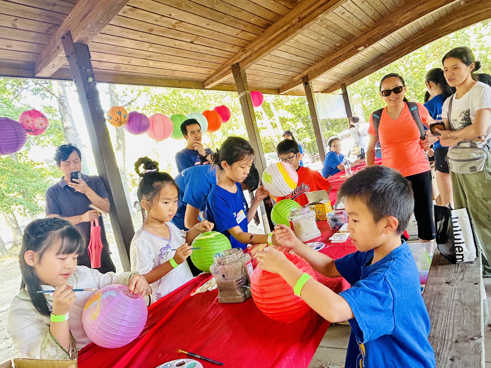

Who We Are
PCA Youth Center is a Pittsburgh Chinese American youth nonprofit with adult and student volunteers.

PCA (Pittsburgh Chinese American) Youth Center, 匹兹堡华裔青少年中心, is a 501(c)(3) non-profit organization with adult and student volunteers.
The PCA Youth Center inspires leadership and a love of community service among children by promoting cultural exchange across diverse communities, providing kids opportunities to help underprivileged populations, and encouraging youth to become advocates for social equality.
We create hands-on workshops and interactive forums on a wide range of topics. These opportunities help kids develop their interests, build independence, and grow a passion for community service.
Projects
Current and past projects include fundraising and donating more than 300 books for 13 school and community libraries across Pittsburgh, preparing meals for the sick and homeless, hosting career forums and mentorship events for kids, volunteering for community projects such as tree and flower planting for community spaces, providing free art and cultural workshops for kids, and promoting Asian American culture and heritage through various festivals.
Leadership
07/2025 - 06/2027 Board of Directors
| President | Lu Zhou |
| Vice President | Jesse Chen |
| Treasurer | Yanxiang You |
| Secretary | Han Zhao |
| Board Directors | Jesse Chen, Yan Huang, Landy Liang, Xi Lin, Ivy Shen, Yingru Wang, Flora Wu, Yanxiang You, Han Zhao, Liying Zheng, Lu Zhou |
Our Mission
The PCA Youth Center is a non-profit organization committed to developing the life skills of youth, with the help of the PCA Student Council. As a group of teens, Student Council creates hands-on workshops and interactive forums dedicated to improving opportunities for kids to develop their interests, independence, leadership, and passion for community service.
Organization Documents
Bylaws
View the current PCA Youth Center bylaws and organization document link.
AAPI Statement
Read PCA Youth Center's statement in support of Asian and Pacific Islander communities.